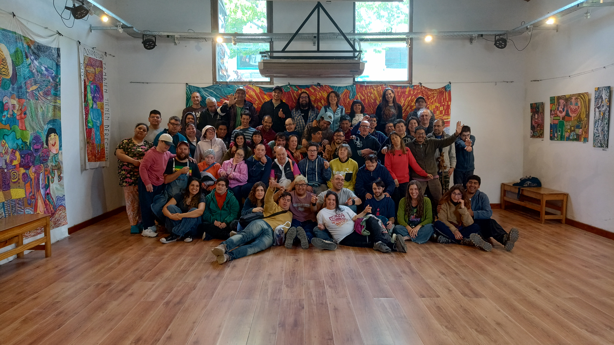
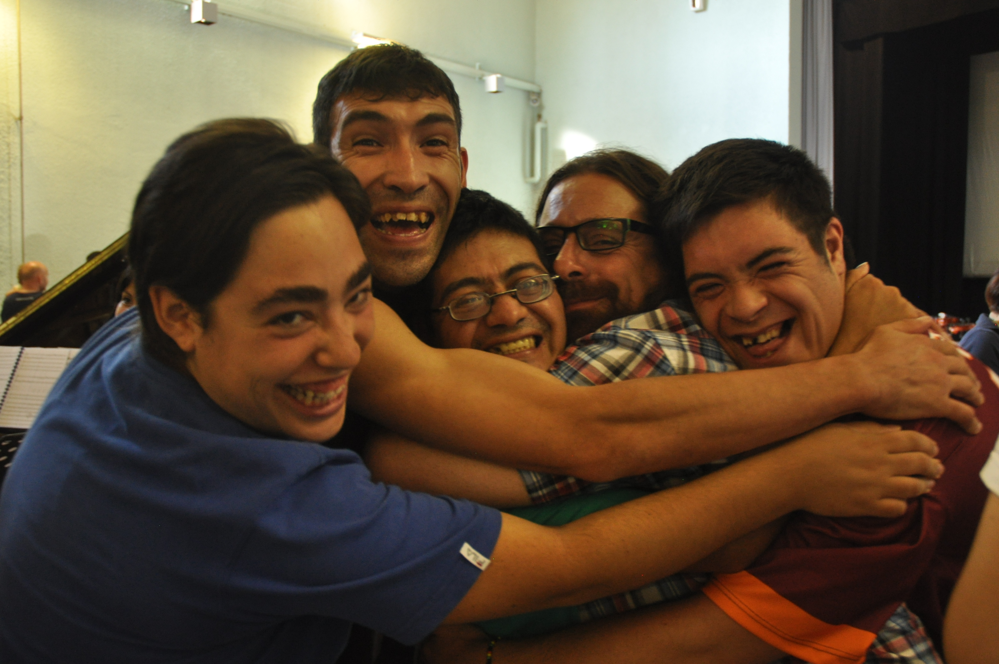

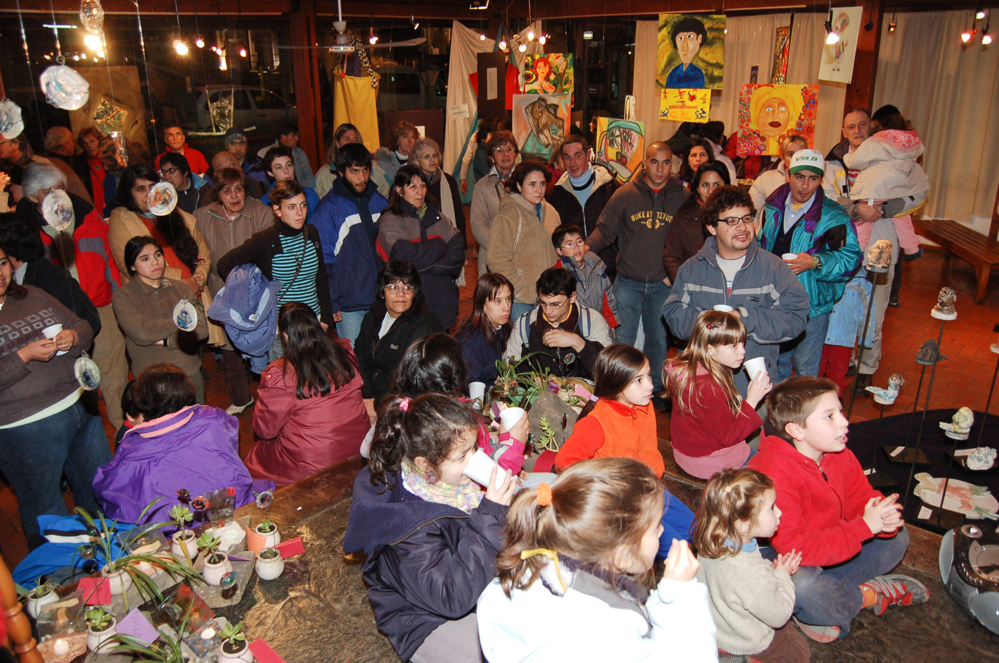
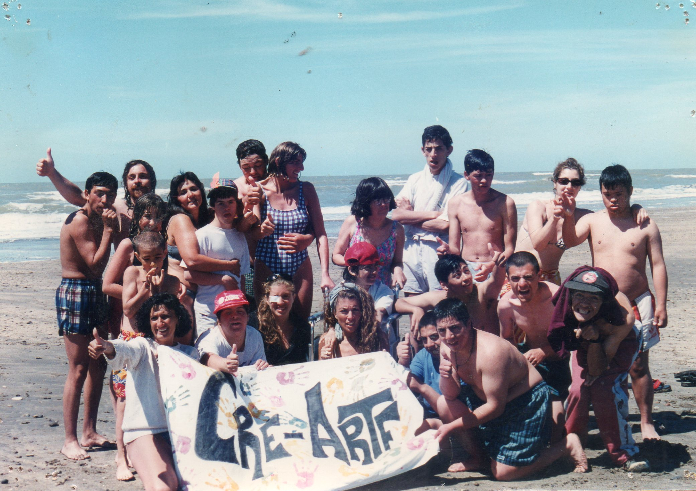
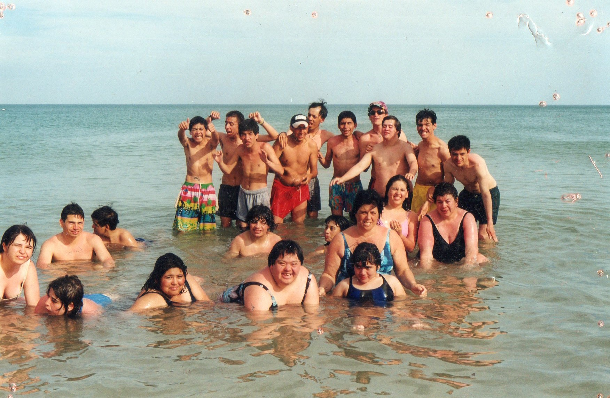
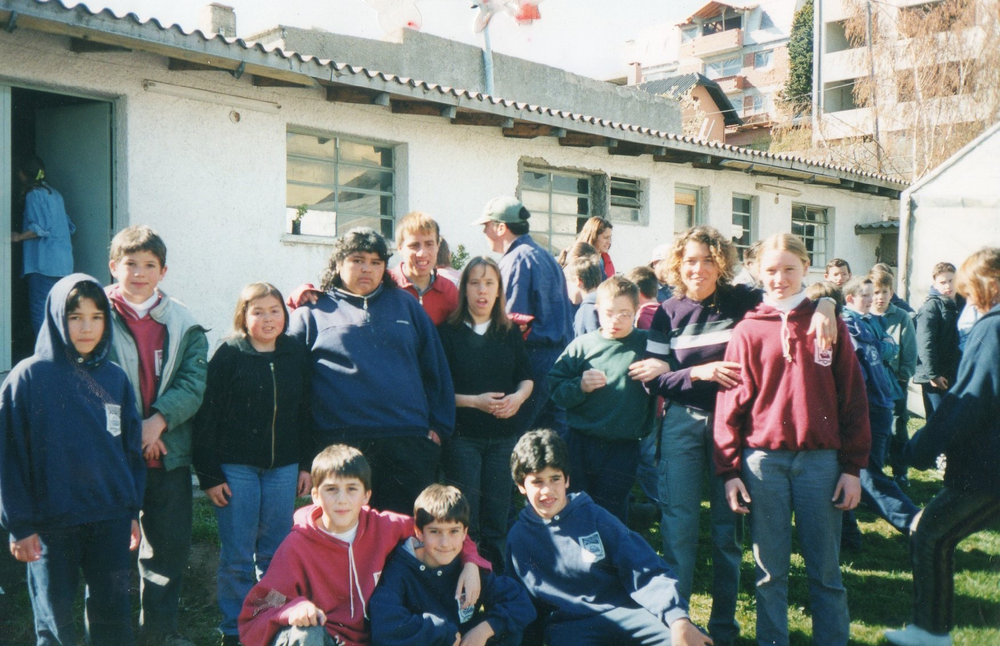
A lo largo de los años, Cre-Arte fue consolidando una propuesta educativa única. En 2020, logró un hito importante al convertirse en la primera institución de educación permanente para adultos con discapacidad en Argentina, gracias a un convenio con el gobierno de Río Negro.
Actualmente, ofrece más de 50 disciplinas artísticas y culturales, como música, teatro, danza, artes plásticas, cerámica, fotografía, informática, cocina y jardinería. Cerca de 80 estudiantes participan en sus talleres, acompañados por un equipo de aproximadamente 30 personas. Su impacto trascendió el ámbito local, participando en festivales y presentaciones internacionales en países como Italia, España, Estados Unidos, Alemania, Suiza y Brasil, además de recibir numerosos reconocimientos a nivel nacional.
Entre sus iniciativas más destacadas se encuentra el festival internacional Arte x Igual, que reúne artistas con discapacidad de distintos países, promoviendo el intercambio cultural y la inclusión.
Hoy, con más de 30 años de trayectoria, Cre-Arte continúa creciendo y proyectándose hacia el futuro, con el objetivo de fortalecer redes de artistas, promover la inclusión y mejorar la calidad de vida de sus estudiantes, dejando un legado duradero en la comunidad.
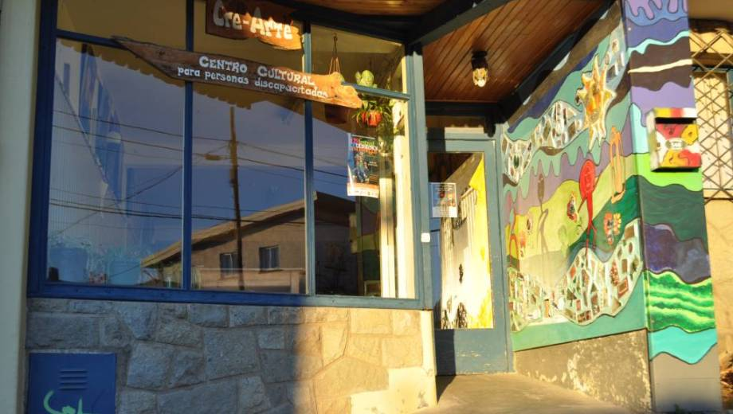
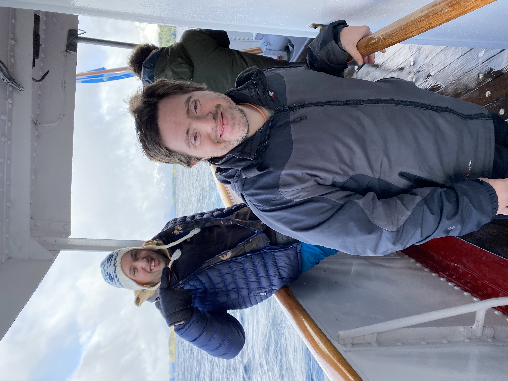


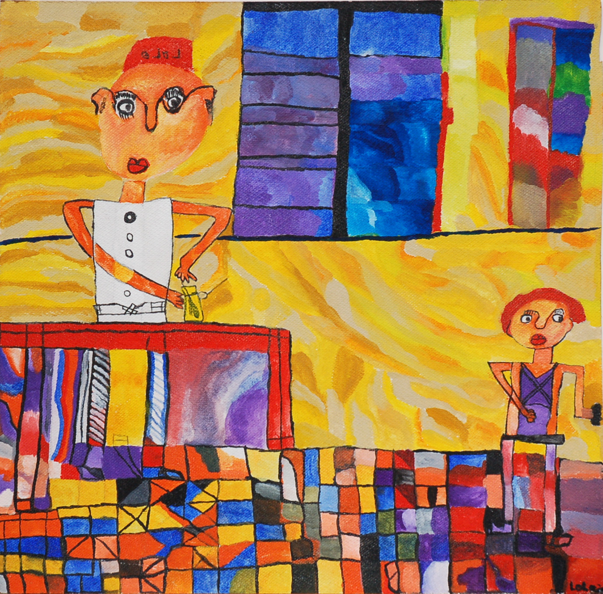
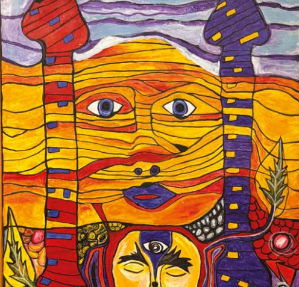
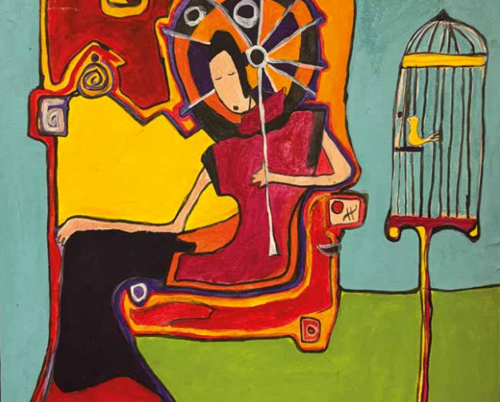

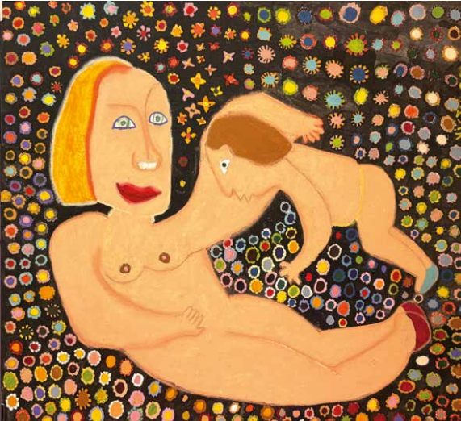
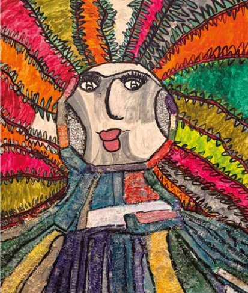
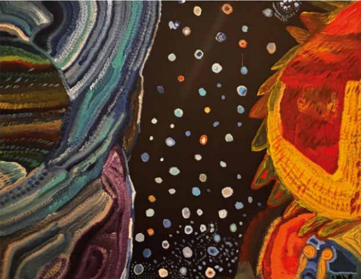

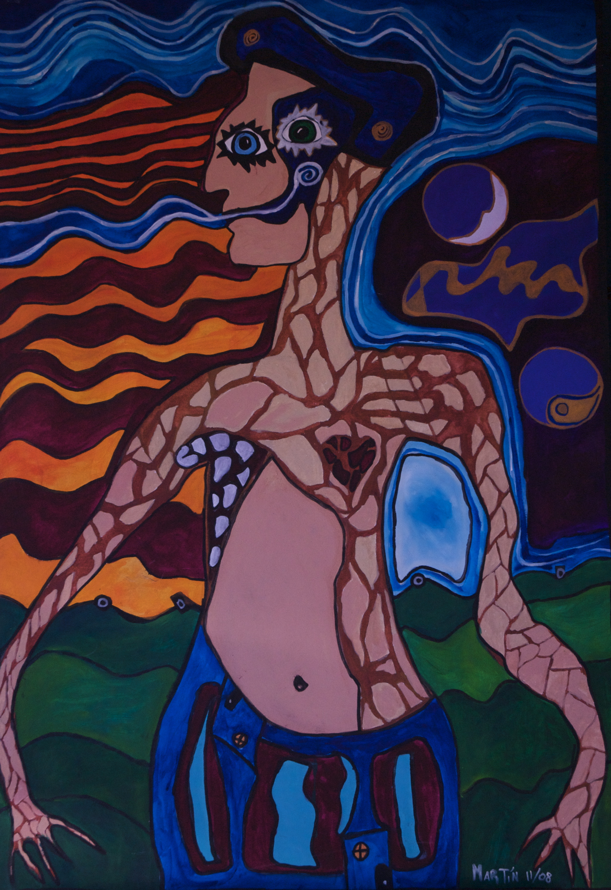